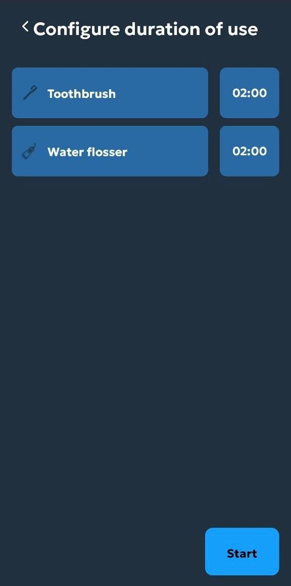
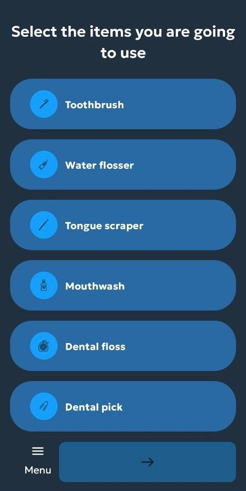
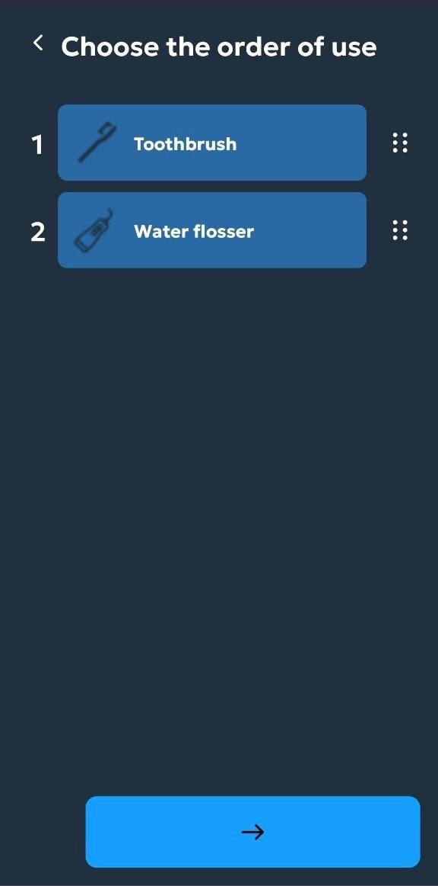
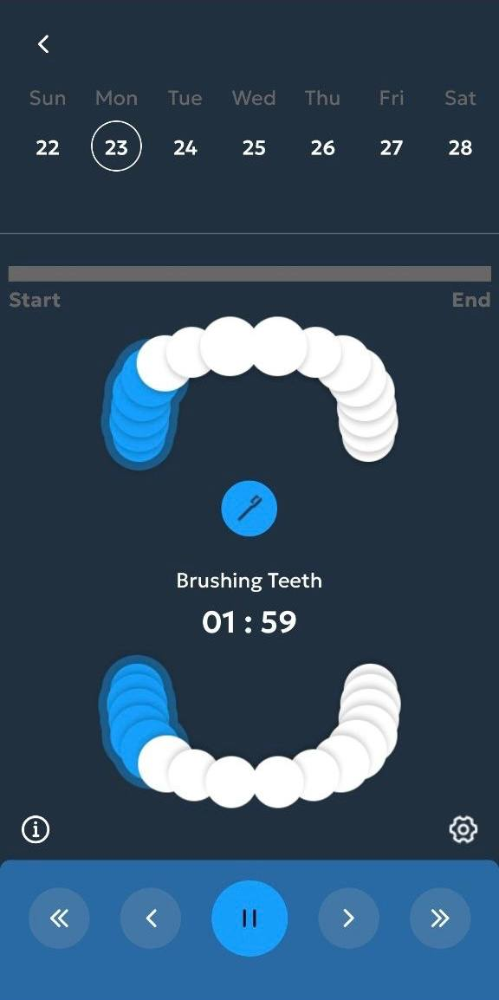
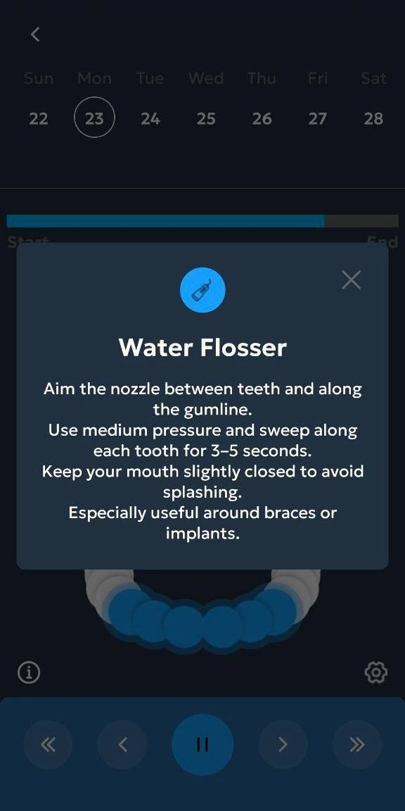
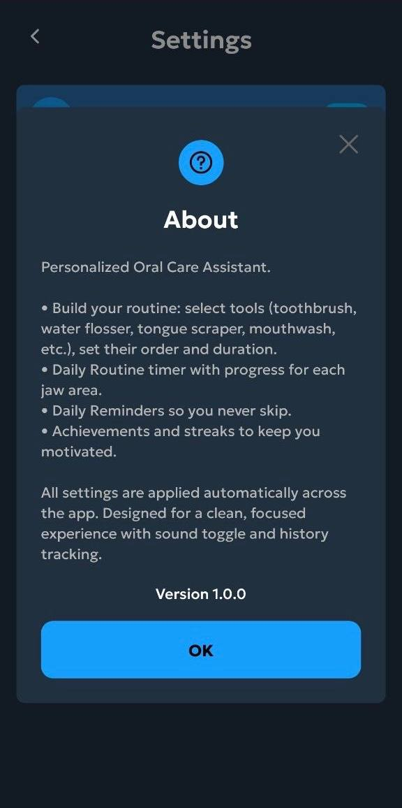
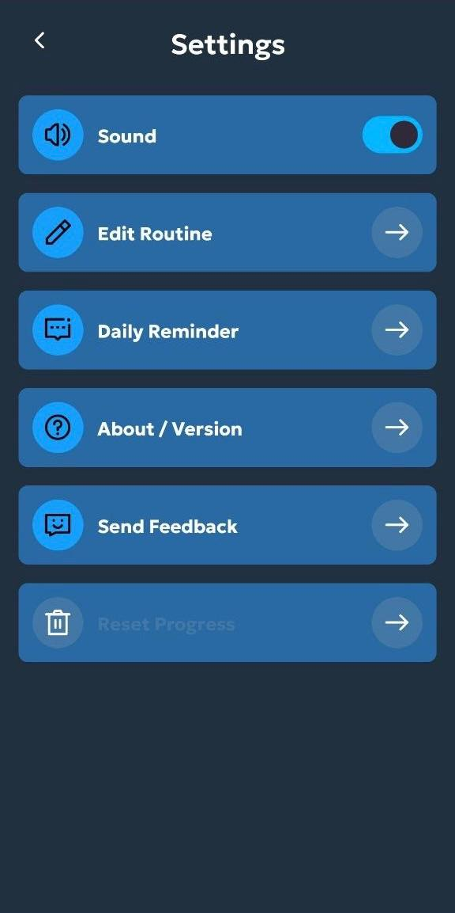

Tooth Care
Daily guided routine
Make every oral care session structured, guided, and easier to repeat
Tooth Care turns oral hygiene into a personalized flow. Choose the products you actually use, arrange them in the correct order, set duration for every step, and follow a guided timer that helps the full routine feel more deliberate and consistent.
Tool choice
Order logic
Duration control
Guided timer
Routine builder
Guided timer
Precision control

Personalized logic
The routine starts with what the user actually needs, not a generic template.
Visual guidance
The timer view helps turn configuration into something usable every single day.
Tooth Care is built around a simple idea — oral care works better when the routine is clear, sequenced, and timed correctly
Build the routine layer by layer
01
Choose the products you actually use
The routine begins with item selection. Toothbrush, floss, water flosser, mouthwash, and other tools become the base of a more realistic session instead of forcing everyone into the same generic model.

02
Define the order in which they should be used
Order matters. The app lets users arrange each tool into the sequence that matches their own oral care approach.

03
Set time for every step of the session
Duration settings make the routine measurable. Each selected tool can be given the right amount of time before the guided flow begins.

04
Move from setup into execution without losing structure
Once the products, order, and time are defined, Tooth Care turns all of that setup into one guided oral care session that feels consistent from start to finish.
Choice
Products can be customized
Sequence
Order can be arranged logically
Timing
Each step gets a duration
The routine is not just configured — it is guided on-screen in real time
The strongest part of the product is how it turns preparation into execution. Instead of being a static checklist, Tooth Care becomes a live session companion with timing, step awareness, and focused interaction.
Step timing
Guidance becomes much easier when every stage is visible.
Session focus
The design keeps attention on the current action.
One full oral care session shown as a product story
Start from a clean welcome point
The first screen positions the product as a dedicated oral care assistant with a focused single-purpose entry.
Configure the routine in a controlled setup flow
Product selection, sequence definition, and duration setup are separated into their own screens, which makes the process feel structured rather than rushed.
Follow the session as it happens
The timer screen becomes the operational center of the app, turning a setup into a real guided routine with active time control.

Adjust the product around the user over time
Settings and about layers help the app feel complete by giving users more control over reminders, session behavior, and basic product information.


Timing gives the routine its real value
Many oral care apps stop at reminders. Tooth Care goes further by supporting the actual session through defined durations and guided step timing. That makes the experience more useful when the user wants consistency instead of guesswork.
Configured in advance
Every product can get its own time allocation.
Visible during the session
The timer interface keeps the routine active and
readable.
Easier to repeat correctly
Structure helps reduce random or rushed sessions.
Control stays accessible even after the routine is built
Tooth Care does not end at the timer. The supporting layers of the product make it easier to adjust how the app behaves over time, keep the experience lightweight, and maintain a stronger sense of user control.
Users can go back and refine setup instead of being locked in.
Sound and related session behavior can stay aligned with personal habits.
About and support layers make the app feel more complete and intentional.
The whole system stays compact enough for repeated everyday use.
The app feels calm enough for daily use and structured enough to be worth repeating
★★★★★
“The best part is that I can build the routine around what I actually use instead of adapting myself to a fixed template.”
Emma R.
Daily oral care user
★★★★★
“The timer screen makes the session feel much more intentional. It is easier to stay consistent when every step is visible.”
Daniel T.
Routine-focused user
★★★★★
“The app looks clean, and the configuration flow is simple enough that I can actually stick with it instead of dropping it.”
Olivia S.
Health app user
Start building a better oral care routine with Tooth Care
Choose the products, define the order, set the timing, and let the app guide the full session through a cleaner and more structured mobile experience.